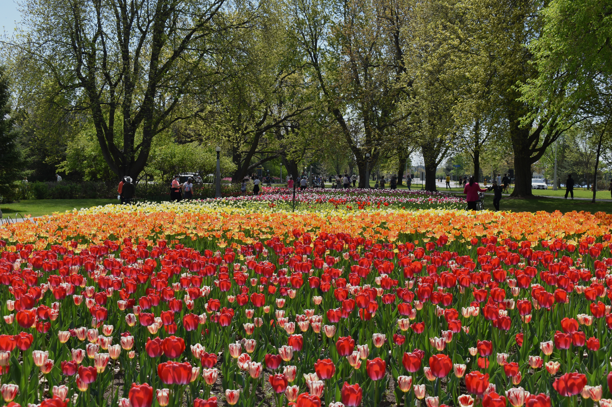

We will be talking a digital tour of my favourite parts about living in the city of Ottawa and surrounding area.
The tulip festival is my favourite thing about Ottawa in the spring.
Click here to read more about the festival!
There is an exhibit currently on at the CMN featuring these lovely creatures! I did my best to work around their enclosures.


Ottawa boasts some of the best fall foliage Ontario has to offer and it is another reason I love living here. The left image was taken in Manotick, ON. The middle image was taken in Gatineau Park, QC and the last image was taken at Remic Rapids in Ottawa.

Although our winters are freezing the best part of winter is when the canal is finally open for skating season! Winterlude ice sculptures are always nice to look at as well. The picture on the right was taken at Pinhey Forest in Ottawa and believe it or not there's a sand dune under there!